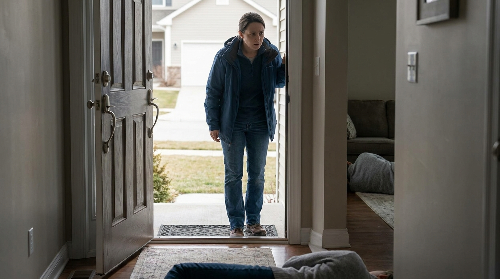
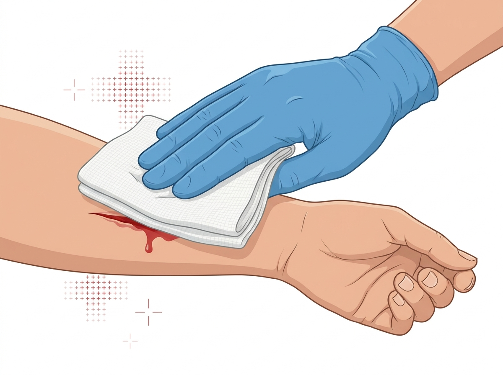
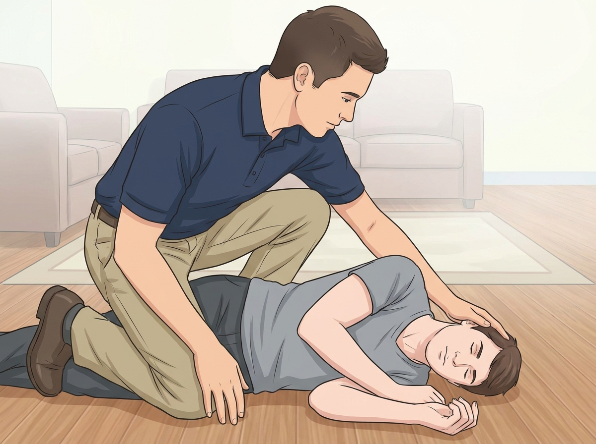
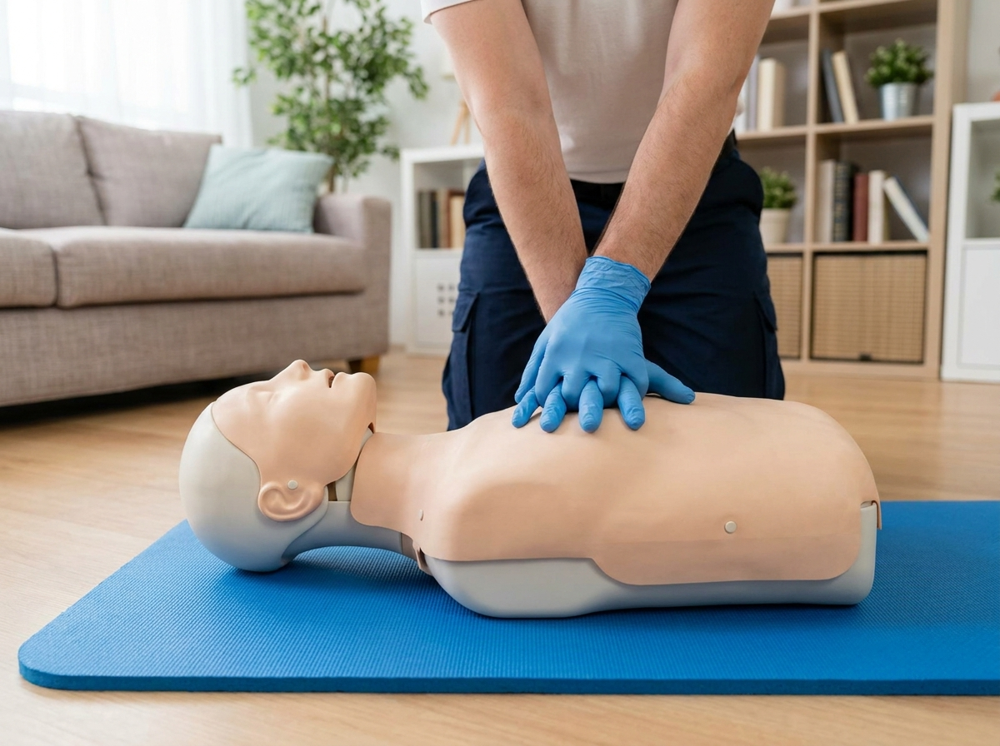
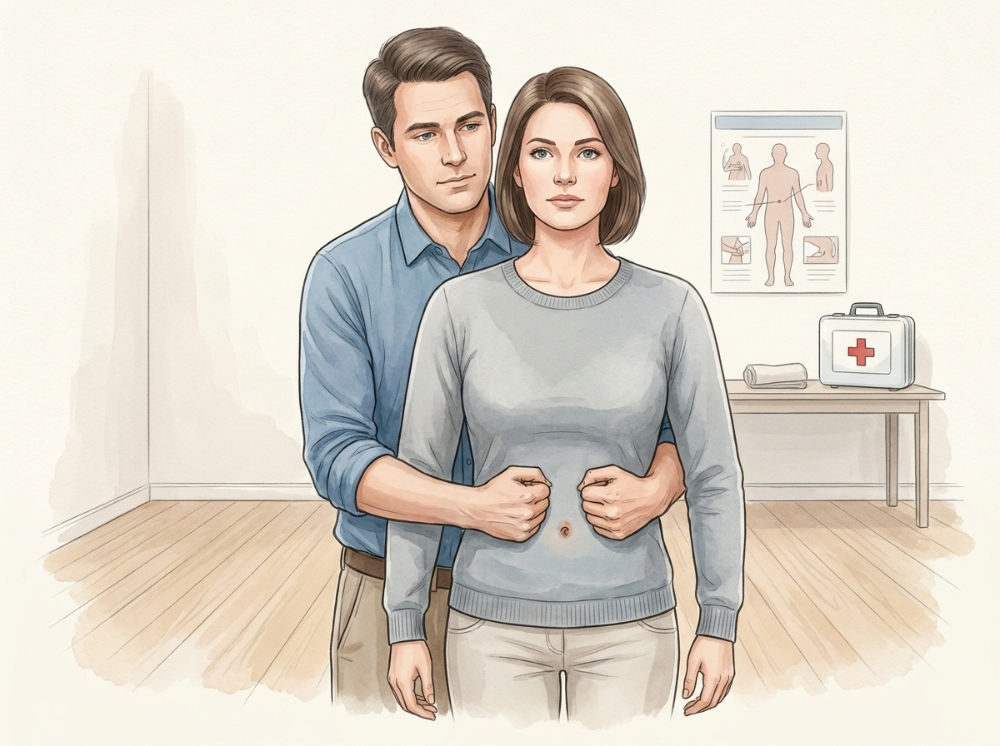
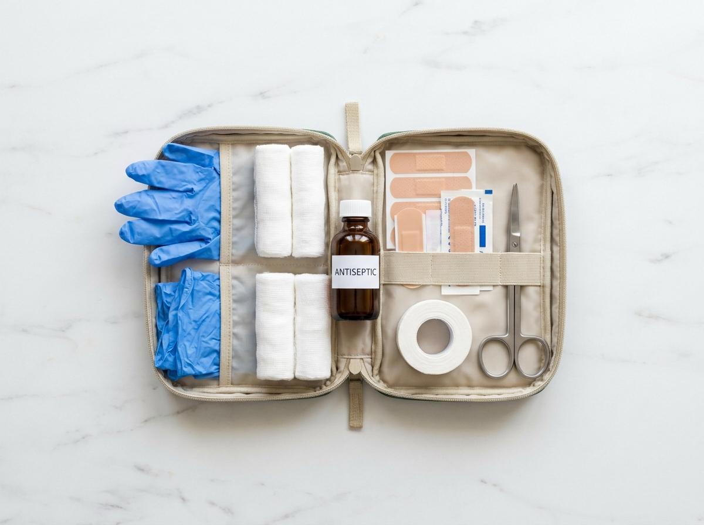

En México, el tiempo promedio de respuesta de una ambulancia en zona urbana oscila entre los 12 y los 25 minutos. En zonas rurales o en horas pico, puede superar los 30. Durante esos minutos, quien está al lado de la víctima eres tú. Y lo que hagas — o dejes de hacer — puede marcar la diferencia entre una recuperación completa y un desenlace fatal.
Antes de hablar de lo que sí debes hacer, vale la pena detenerse en lo que casi todos hacemos mal por instinto. Estos errores son tan comunes que casi parecen naturales — pero cada uno de ellos puede empeorar la situación.

Este paso parece obvio, pero en la práctica es el más violado. Antes de correr hacia la víctima, mira a tu alrededor. ¿Hay fuego, humo, cristales rotos, cables caídos, tráfico activo? ¿La persona está dentro de un vehículo en una vialidad? ¿Hay agresor o persona violenta cerca?
Un rescatista que se convierte en víctima es un rescatista que no ayuda a nadie. La evaluación de escena toma menos de 10 segundos y puede salvarte la vida — y con ello, la capacidad de seguir auxilando.
Regla simple: Si la escena no es segura, no entres. Llama a emergencias desde ahí (911, CBPC, o el número local) y da instrucciones a gritos si la víctima puede escucharte. Si puedes hacer algo para volver la escena segura sin exponerte, hazlo.
Aquí hay una diferencia brutal entre una llamada que acelera la respuesta y una que pierde minutos valiosos. La mayoría de las llamadas a emergencias en México son caóticas — el llamante cuelga antes de dar la dirección, no sabe qué municipio dice, o empieza a dar información irrelevante mientras la víctima está en paro.
La estructura correcta de una llamada de emergencia es simple y debe practicarse:
Identificación y ubicación: "Me llamo [nombre]. Estoy en [dirección completa, municipio, referencias]. Hay una persona inconsciente."
Estado de la víctima: "No respira / está sangrando mucho / tiene dolor fuerte en el pecho."
Qué estás haciendo: "Estoy dándole RCP / estoy presionando la herida / no la he movido."
Confirmar que te quedes en línea: "¿Me puede ir guiando? ¿Me quedo en la línea?"
En México, el número de emergencia es 911. Si tienes acceso a los servicios estatales de Protección Civil, también puedes usarlo.

Una hemorragia severa no controlada es la causa de muerte prevenible más frecuente en trauma. Y controllable con las manos desnudas.
El protocolo es simple: presión directa, presión directa, y más presión directa. No retires la tela para "ver si ya paró". Si se satura de sangre, pon más encima sin retirar lo anterior. Si la sangre brota a presión (arterial), no intentes hacer torniquete a menos que hayas sido entrenado — la presión directa sostenida es más efectiva en la mayoría de los casos que el público general atenderá.
Si la herida es en una extremidad y la presión directa no funciona: puedes elevar la extremidad por encima del nivel del corazón mientras mantienes la presión. Esto reduce el flujo sanguíneo por gravedad.

Si la víctima está inconsciente pero respira y no tiene sospecha de trauma espinal, la posición de recuperación (también llamada posición lateral de seguridad) evita que se ahogue con su propio vómito o舌头. Es el paso más olvidado y más importante en víctimas que "se ven mal" pero no están en paro.
Cómo hacerlo: Pon a la víctima boca arriba, dobla la rodilla más cercana a ti en ángulo de 90 grados, cruza el brazo más lejano sobre el pecho. Gira a la víctima hacia ti, apoyando la cabeza sobre la mano del brazo cruzado. Abre la vía aérea inclinando ligeramente la cabeza hacia atrás.
No hagas esto si hay sospecha de trauma espinal, si la víctima está en paro cardíaco, o si la víctima está boca abajo y tiene dificultad respiratoria. En esos casos, llama y espera.
Si la víctima no responde y no respira (o solo jadea), estás ante un paro cardíaco. En ese momento, la RCP es lo único que puede mantener el cerebro vivo durante los minutos que tardará la ambulancia en llegar.

Si no estás capacitado en ventilaciones, el RCP solo con compresiones torácicas (Hands-Only CPR) es la mejor opción. Esto es lo que debes hacer:
La canción "La Macarena" suena a aproximadamente 103 BPM. Si no recuerdas el ritmo, tararéala mentalmente mientras comprimes — te ayudará a mantener el ritmo correcto.

El atragantamiento es una emergencia que ocurre con frecuencia en el hogar, especialmente con niños pequeños y adultos mayores. Si la persona puede toser con fuerza, déjala toser — la tos es el mecanismo natural más efectivo para expulsar el objeto. Solo intervén si la tos se vuelve silenciosa, si la persona no puede respirar, o si pierde el conocimiento.
Si no puede respirar, toser ni hablar: aplica la maniobra de Heimlich. En adultos: par detrás de la víctima, coloca un puño entre el ombligo y el esternón, cubre con la otra mano y da compresiones hacia arriba y hacia dentro hasta que expulse el objeto. En lactantes, las compresiones torácicas con cinco golpes en la espalda son el primer paso.

No necesitas un botiquín de hospital. Lo que sí necesitas es esto en algún lugar accesible:
Revisa el botiquín cada 6 meses. Los vencidos, la tela que perdió su esterilidad, las vendas que se deshacen — todo eso debe reemplazarse. Un botiquín descuidado es peor que no tener ninguno.
¿Quieres que tu familia esté realmente preparada?
En Asesores en Emergencias ofrecemos talleres prácticos de primeros auxilios para familias, empresas y escuelas. Aprende a manejar estas situaciones con simulators de alta fidelidad. Escríbenos a jperez@emergencias.com.mx o visita www2.emergencias.com.mx.